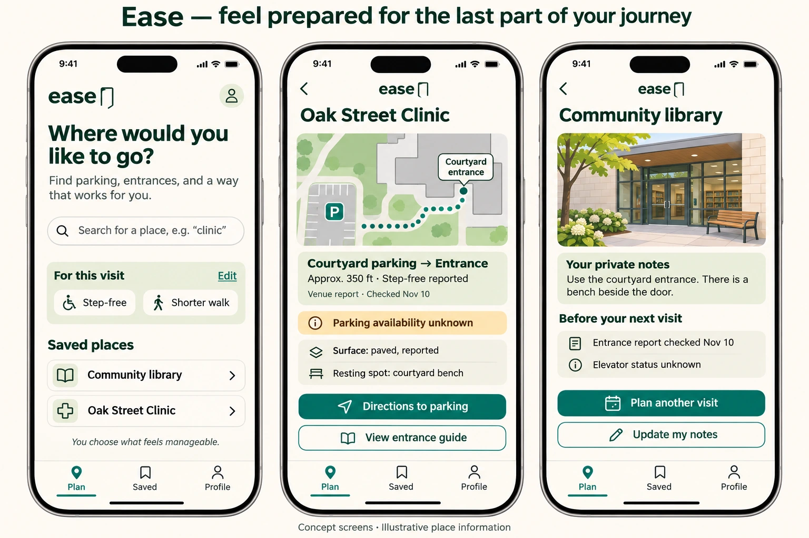
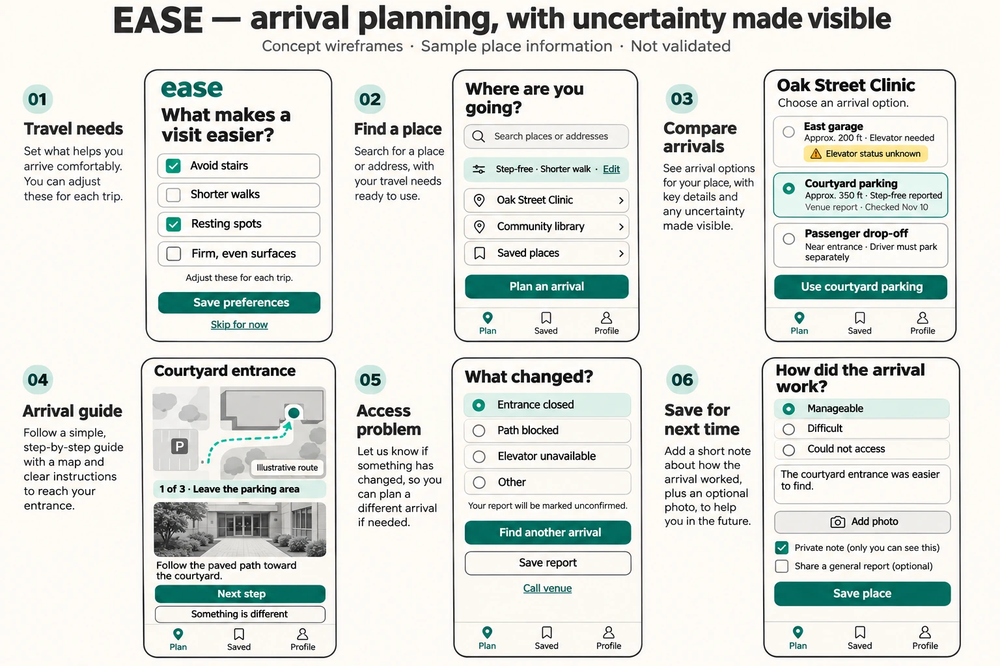

EASE / ACCESSIBLE TRAVEL CONCEPT / 2026
Getting there includes getting inside.
A personal arrival guide for the journey from parking to the right entrance—designed around comfort, confidence, and choice.


- Focus
- Product strategy, mobile UX, and inclusive design
- Core journey
- Plan an arrival, find the entrance, save what worked
- Status
- Early design exploration; not built or user-validated
The address is only part of the journey.
For someone with a temporary injury, limited mobility, chronic pain, or fatigue, the distance between a parking space and an entrance can shape the whole visit. Stairs, slopes, unclear entrances, and uncertain elevator access introduce questions that a street address cannot answer.
Ease explores a focused design question: how might people understand the last part of a journey before leaving home, then preserve what they learn for next time?
A personal arrival plan
The central object is a reusable guide connecting a destination, parking or drop-off point, entrance, and the path between them. Each guide separates sourced information, community reports, private notes, and unknown conditions.
- Plan comfortably
Choose a place and practical preferences: avoid stairs, shorten the walk, or find resting spots.
- Know the arrival
Compare parking and drop-off options, then follow landmarks and entrance photos.
- Save what worked
Keep personal notes and photos, with a separate choice to share a community report.
Design for today’s needs.
Preferences describe the journey rather than a diagnosis. A person can request a shorter walk today without creating a permanent medical profile. The concept would allow temporary trip preferences alongside saved defaults.
Explain tradeoffs instead of assigning an accessibility score.
A closer garage may depend on an elevator whose status is unknown. A longer outdoor path may be reported as step-free. Showing those facts lets people judge suitability for themselves; no route is presented as universally accessible.
Make uncertainty visible.
The arrival screen includes a community report date and an explicit “Elevator status unknown” notice. A venue-provided fact would have its own source and confirmation date. Conflicting or outdated reports would need review rather than a blanket verification badge.
Support independence through user control.
Personal notes remain private by default. Sharing an accessibility report is a deliberate choice. The proposed location experience would begin only when someone starts an arrival session, helping them save a parking location or return to their vehicle.
The experience avoids rankings, streaks, and pressure to walk farther. Choosing a drop-off point, changing plans, or deciding a route is unsuitable are all valid outcomes.
Start with clinic arrivals in one local area.
A first pilot would focus on outpatient appointments: choose parking or drop-off, find the correct entrance, and return to the vehicle. A small set of carefully documented destinations would make information quality easier to assess before expanding.
The proposed first version includes arrival options, entrance photos, short instructions, source dates, visible unknowns, downloadable guides, private notes, and a way to report changes. Continuous background tracking and automated accessibility claims are outside that initial scope.
What needs validation
This concept has not yet been tested with users or venue partners. Research would begin with people who experience mobility barriers and those who support their journeys.
- Planning: Can participants choose a suitable arrival option and identify missing information?
- Wayfinding: Do photographs and landmarks help them find the intended entrance?
- Trust: Can participants distinguish confirmed facts, reports, personal notes, and unknowns?
- Repeat visits: Does a saved guide make the next visit easier to prepare for?
Proposed measures include successful entrance finding, missed barriers, reported confidence, and ease of reusing a guide. Walking speed and distance would not define success.
The opportunity
Ease’s intended value is a growing collection of places someone knows how to reach comfortably. The next step is to test manually prepared arrival guides with a small group before investing in routing infrastructure. Trustworthy place information and an interface accessible to its intended users are foundational requirements, not outcomes already achieved.
Expanded product direction
From a destination to a familiar place.
Ease is a personal arrival planner for people who need more context about the final part of a journey. The proposed first audience is people preparing for unfamiliar outpatient appointments with temporary or ongoing mobility needs. The product helps them choose an arrival option, follow an entrance guide, respond to unexpected barriers, and preserve useful knowledge.


Six connected moments
01 / Set needs without sharing a diagnosis
Optional preferences describe practical needs: avoiding stairs, limiting walking, resting spots, and firm surfaces. Users can skip setup or change preferences for one visit. Ease would explain how a preference affects available options without claiming a route is medically appropriate.
02 / Find the exact destination
A search result should distinguish a building, department, and entrance. When several services share an address, users confirm where they are going before choosing parking. A place without an arrival guide still supports private planning notes and a venue contact link.
03 / Compare arrival options
Compare garage, outdoor parking, and passenger drop-off using approximate walking distance, reported steps or slopes, elevator dependencies, and information sources. Filters must never silently turn missing data into a suitable result. If a preference cannot be confirmed, show that uncertainty beside the option.
04 / Follow an entrance guide
Driving directions lead to the chosen parking access point. A separate guide then uses short steps, recognizable landmarks, and entrance photos. It can be read before departure or downloaded. A text alternative must carry the same useful information as the map.
05 / Recover when something changes
“Something is different” opens a focused report flow for a closed entrance, blocked path, unavailable elevator, or another issue. Users can return to alternative options or call the venue. If no suitable alternative is known, Ease should say so directly. Submitting a report would not imply it has been confirmed or that help is on the way.
06 / Keep a personal memory
After a visit, a short optional reflection captures whether the arrival was manageable and what to remember. A private note and an optional shared report are separate records, so publishing general information never automatically exposes personal notes or visit history.
Information that deserves trust
| Record | What it contains | How it is presented |
|---|---|---|
| Place | Building, department, entrances, venue contact | Confirm the actual destination |
| Arrival option | Parking or drop-off, path, approximate distance, barriers | Tradeoffs and missing facts visible together |
| Reported fact | Source, observation date, confirmation status | Venue-provided, community-reported, conflicting, or unknown |
| Private visit note | Personal instructions, photos, optional parked location | Visible only to its owner by default |
| Change report | A specific barrier and when it was observed | Unconfirmed until reviewed; reconfirmation rules needed |
Walking distances would be approximate. A report’s date is not proof a condition remains unchanged. Information freshness rules must depend on the type of fact: an elevator outage and a building entrance cannot share one blanket expiry policy.
Design the difficult states first.
- No coverage: explain what is missing, offer a venue contact and private notes, and avoid inventing a route.
- No matching option: show which needs are unconfirmed or unmet; let users deliberately adjust preferences.
- Conflicting reports: show the disagreement and dates rather than replacing it with a confident badge.
- Offline: show the download date and explain that updates cannot be checked.
- Location unavailable: support manually choosing parking and following written instructions.
- A path becomes unsuitable: preserve the original context while returning to alternatives; never imply an unknown route is safe.
A calm interface must also be usable.
The proposed interaction requirements include adjustable text, clear screen-reader labels, strong contrast, large touch targets, visible focus, and information conveyed through text as well as color. Directions should be available as a complete list or one step at a time. Photo descriptions, reduced-motion support, and a usable map-free experience would need testing with participants using their own assistive tools.
These are implementation and validation requirements. The visual mockups alone do not demonstrate conformance.
A focused pilot, before a large map.
- Co-design: learn how people prepare for unfamiliar visits, including how they handle missing information and changing needs.
- Prepare a small guide set: document participating clinic entrances and arrival options with venue input and dated observations.
- Test planning: ask participants to select an option, explain its tradeoffs, and identify unknowns.
- Test real arrivals: with participant consent and a suitable support plan, observe entrance finding and unexpected barriers.
- Test repeat use: evaluate whether saved notes help prepare for a later visit.
Success would mean fewer unresolved arrival questions, clearer understanding of limitations, and easier reuse of personal knowledge. No results have been measured yet.
Keep the product focused.
First release: place search, trip preferences, curated arrival options, a photo-and-text guide, offline downloads, private notes, and change reports.
Later, if evidence supports it: venue maintenance tools, explicit sharing with a trusted companion, and optional location-assisted arrival sessions.
Business hypothesis: participating venues could pay for guide-maintenance tools while visitor access stays free. Commercial participation must not buy a claim of suitability or influence the facts shown to users.
The central promise is simple: arrive with more context, make your own choice, and remember what worked.